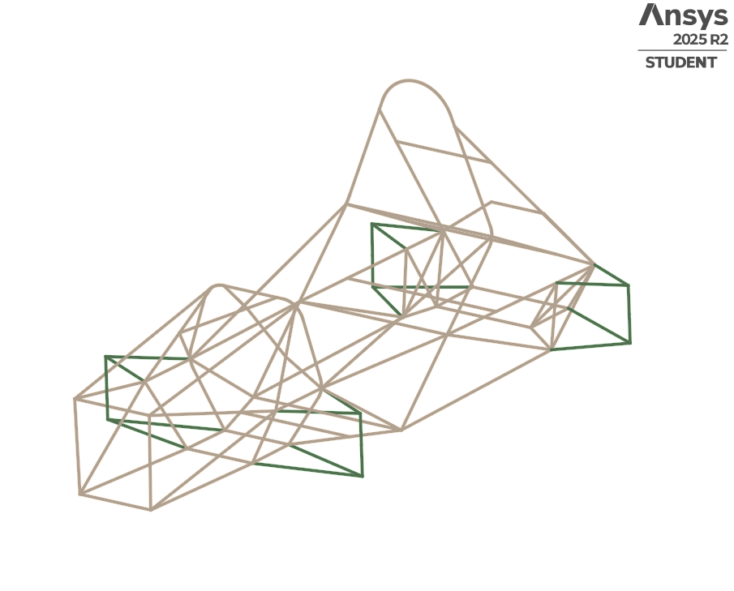
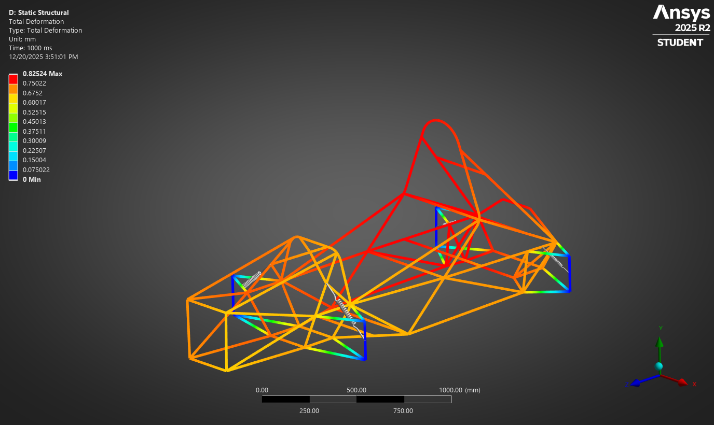
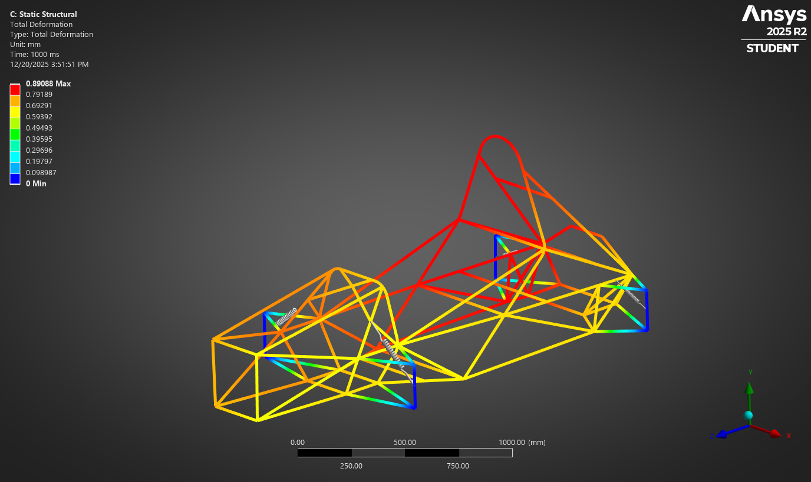
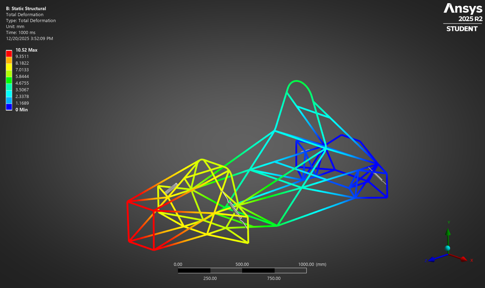

ANSYS Innovation Space — Completed Guided Simulation Course
This project focuses on structural analysis of a Formula SAE tubular spaceframe chassis using ANSYS Mechanical. The objective was to develop correct modeling workflows for motorsport applications, including geometry preparation, load case definition, and interpretation of structural response.
While the baseline chassis geometry was provided as part of an ANSYS instructional course, all geometry cleanup, tube property assignment, boundary conditions, and load applications were completed independently to mirror real-world motorsport analysis practices.
The chassis was imported as a line-body network representing the spaceframe centerlines. False intersections and redundant nodes were removed to ensure proper connectivity prior to assigning structural properties.
Cleaned line-body chassis geometry prepared in SpaceClaim with consistent node connectivity.
Tubular cross-sectional properties, including outer and inner diameters, were assigned to all members to represent realistic steel tube construction before meshing and analysis.
Equal and opposite vertical forces were applied at the front lower wishbone pickup points to evaluate chassis torsional stiffness under asymmetric wheel loading.

Total deformation under torsional loading used to assess global chassis compliance.
A lateral acceleration was applied at the vehicle center of mass while suspension pickup points were constrained to represent steady-state cornering conditions.
Chassis deformation under cornering load case.
An increased acceleration magnitude was applied to represent combined aerodynamic downforce and lateral cornering loads. Results were compared against the baseline cornering case to observe load scaling effects.
Total deformation under combined aerodynamic and cornering loading.
A frontal load was applied at the forward-most chassis nodes while rear support locations were constrained to simulate impact-like loading conditions.
Total deformation under frontal impact loading.

Bending moment distribution highlighting primary load paths during frontal loading.
Across all load cases, the chassis exhibited expected spaceframe behavior with load transfer concentrated through triangulated members and suspension interfaces. Regions of increased deformation and internal forces aligned with known motorsport design sensitivities.
This project demonstrates applied use of ANSYS Mechanical for line-body chassis modeling, realistic motorsport load case definition, and interpretation of deformation and internal force results within a Formula SAE context.
The workflows developed in this guided project form a foundation for future fully custom chassis designs. These methods will be extended to original vehicle structures, including Shell Eco-Marathon and student team competition vehicles, with increased focus on design iteration, manufacturability, and performance optimization.